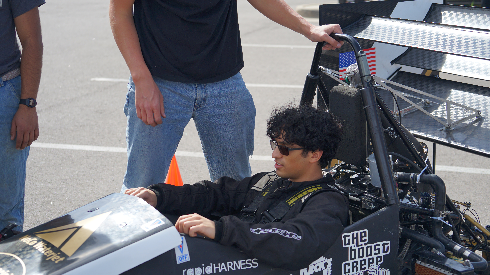
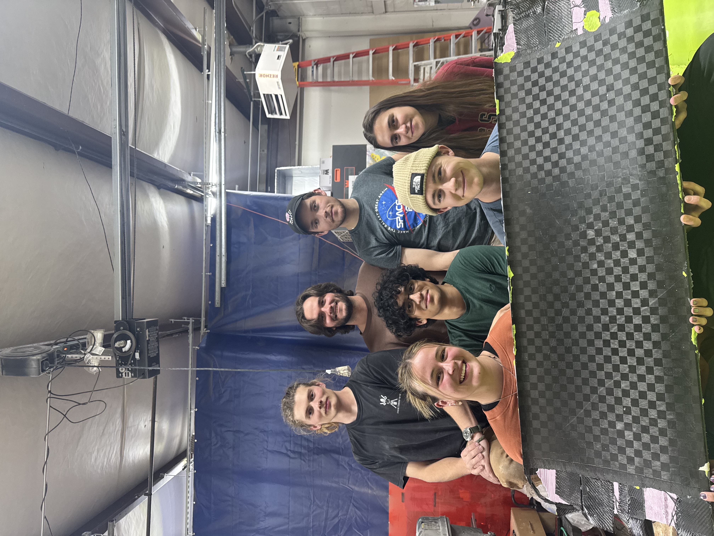
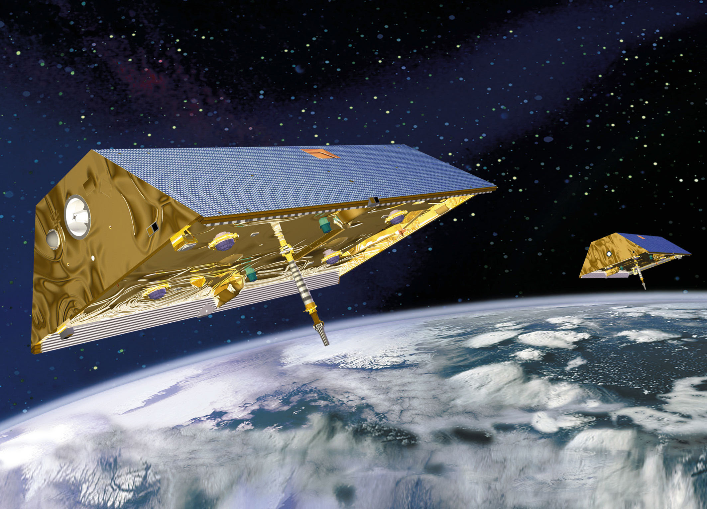
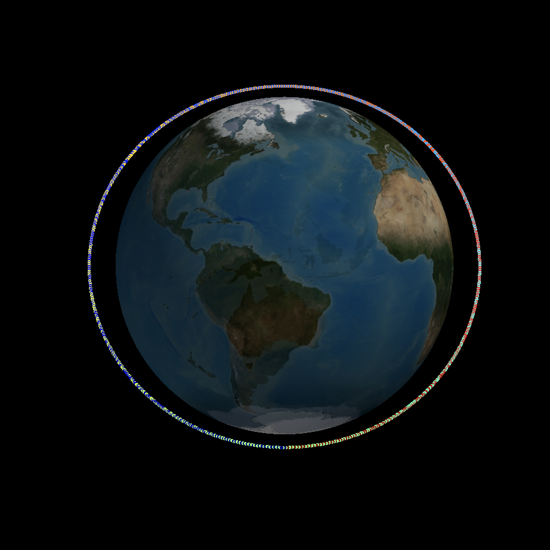
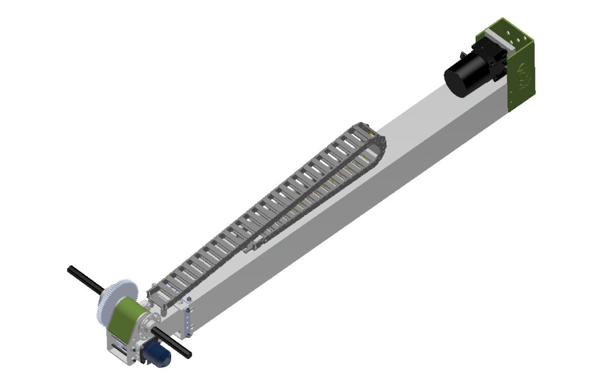
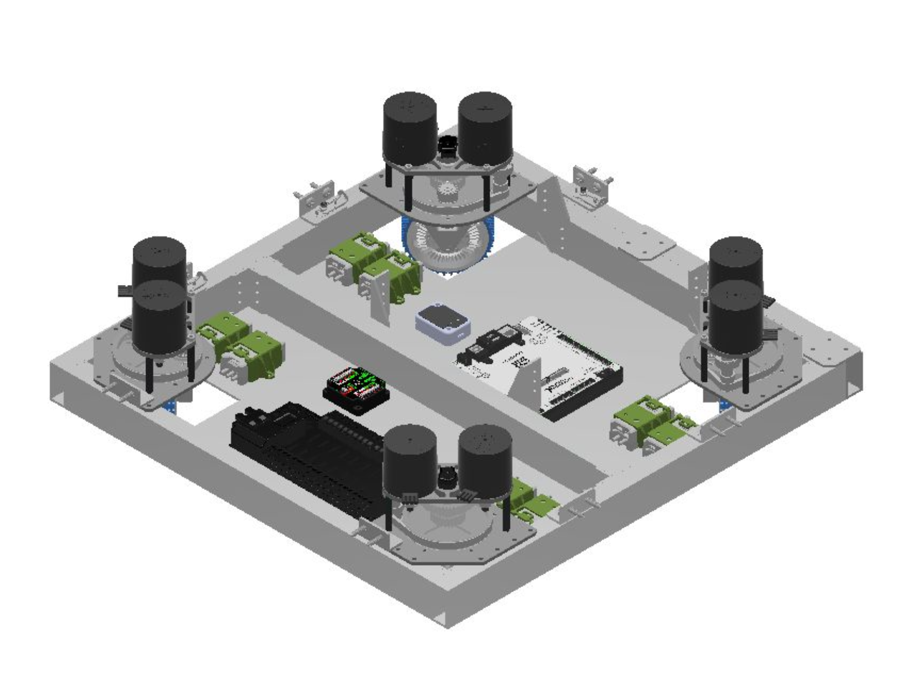
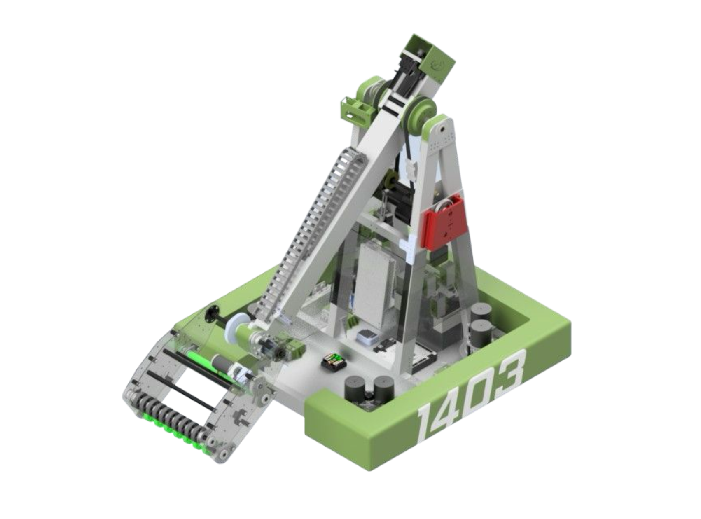

Career History
Where I've Worked
May 2026 — Present
Aero Testing Lead
CU Boulder Formula SAE Buffs Racing · Boulder, CO
Leading all aerodynamic testing on team vehicle, verifying our CFD using real-world driving data from various sensors:
- Using suspension potentiometers to measure ride height during driving, correlating distance changes to downforce, including all dynamic event testing.
- Developing a new wind rake for side pod testing to eliminate bulkiness of wiring and using a new data acquisition computer that does not interfere with the driver.
- Testing DRS capabilities using our current rear wing setup to determine effectiveness in dynamic events.
- Using suspension potentiometers to measure ride height during driving, correlating distance changes to downforce, including all dynamic event testing.
- Developing a new wind rake for side pod testing to eliminate bulkiness of wiring and using a new data acquisition computer that does not interfere with the driver.
- Testing DRS capabilities using our current rear wing setup to determine effectiveness in dynamic events.
Sept 2024 — Present
Aerodynamics Engineer
CU Boulder Formula SAE Buffs Racing · Boulder, CO
- Designed and iterated sidepod and undertray geometries in SolidWorks using CFD to optimize radiator heat transfer and downforce-to-drag ratio under Formula SAE regulations.
- Reduced aero package mass by ~30% while maintaining cooling and aerodynamic performance.
- Independently designed and deployed an on-car pressure sensor grid to experimentally validate CFD predictions (sensor selection, calibration, NI cDAQ, MATLAB).
- Developed controlled on-track testing procedures to correlate experimental pressure data with simulation results.
- Manufactured carbon fiber and fiberglass aero components using foam cores, molds, and vacuum bagging.
- Collaborated with chassis and suspension teams to tune ride height and suspension travel for ground-effect performance.
- Reduced aero package mass by ~30% while maintaining cooling and aerodynamic performance.
- Independently designed and deployed an on-car pressure sensor grid to experimentally validate CFD predictions (sensor selection, calibration, NI cDAQ, MATLAB).
- Developed controlled on-track testing procedures to correlate experimental pressure data with simulation results.
- Manufactured carbon fiber and fiberglass aero components using foam cores, molds, and vacuum bagging.
- Collaborated with chassis and suspension teams to tune ride height and suspension travel for ground-effect performance.

Me driving.

Vacuum-bagging mold

First wing I made

Our 2026 Comp car
Sept 2025 — Present
Undergraduate Researcher
CU Boulder · Boulder, CO
Researching new methods for gravity anomaly detection using existing and new satellite designs.
- Currently developing a MATLAB simulation to correlate recent GRACE satellite data to atomic clock time relativity.
- Finding advancements to better current atomic clock structures for future missions.
- Currently developing a MATLAB simulation to correlate recent GRACE satellite data to atomic clock time relativity.
- Finding advancements to better current atomic clock structures for future missions.

Grace Satellite Example

Simple orbit simulation in MATLAB
May 2025 — Aug 2025
Aircraft Mechanics Intern
Princeton Airport · Princeton, NJ
- Assisted A&P and IA mechanics with airport and aircraft responsibilities, and maintenance shop upkeep.
- Diagnosed mechanical, electrical, and avionics faults on general aviation aircraft by analyzing system behavior and identifying failure modes.
- Referenced maintenance manuals, wiring diagrams, and FAA documentation to troubleshoot and resolve issues.
- Assisted with a full engine replacement on a Cirrus SR20, supporting removal, installation, operational checks, and documentation for FAA compliance.
- Evaluated component wear, tolerances, and operational limits, applying real-world safety margins and reliability constraints.
- Diagnosed mechanical, electrical, and avionics faults on general aviation aircraft by analyzing system behavior and identifying failure modes.
- Referenced maintenance manuals, wiring diagrams, and FAA documentation to troubleshoot and resolve issues.
- Assisted with a full engine replacement on a Cirrus SR20, supporting removal, installation, operational checks, and documentation for FAA compliance.
- Evaluated component wear, tolerances, and operational limits, applying real-world safety margins and reliability constraints.

Annual Inspection of a T-28B.

Working on wiring behind panel.

Engine Swap of a Cirrus SR20.

Engine Removal after crash.
Sept 2021 - June 2024
Design Captain
FRC Team 1403 Cougar Robotics · Skillman, NJ
- Oversaw end-to-end development of robotic components from conceptual design through manufacturing and testing, using CAD and FEA to model parts, assemblies, and subsystems.
- Led research, design iteration, and validation of mechanical components, ensuring designs met performance and manufacturability requirements.
- Led development of a lead-screw-driven telescoping arm achieving less than 1 sec extension, over 5 ft reach, and simplified maintenance for high-scoring game-piece placement.
- Operated and collaborated on fabrication using CNC machines, lathes, mills, laser cutters, and 3D printers to produce functional, purposeful hardware.
- Created and organized professional technical documentation, including CAD drawings, analyses, and design justifications, for formal review and competition judging.
- Coordinated a team of students, promoting clear communication, collaboration, and high engineering standards throughout the design cycle.
- Achieved team's highest-ever ranking 146th of 3290 teams globally.
- Led research, design iteration, and validation of mechanical components, ensuring designs met performance and manufacturability requirements.
- Led development of a lead-screw-driven telescoping arm achieving less than 1 sec extension, over 5 ft reach, and simplified maintenance for high-scoring game-piece placement.
- Operated and collaborated on fabrication using CNC machines, lathes, mills, laser cutters, and 3D printers to produce functional, purposeful hardware.
- Created and organized professional technical documentation, including CAD drawings, analyses, and design justifications, for formal review and competition judging.
- Coordinated a team of students, promoting clear communication, collaboration, and high engineering standards throughout the design cycle.
- Achieved team's highest-ever ranking 146th of 3290 teams globally.

Prototype of Intake

CAD of Telescoping Arm

Drivetrain CAD

Full Robot CAD